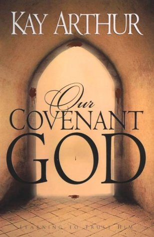

|
|  |
Our Covenant God: Learning to Trust Him
|
Kay Arthur
|
WaterBrook Press |
288
pages |
Main Library
|
SOMEONE LOVES YOU. UNCONDITIONALLY. UNSHAKABLE, UNFAILINGLY. That Someone is God Himself. But how can that be possible? Why would God love you so? Because He has fashioned an unbreakable covenant between Himself and you. And He always keeps His promises. "Everything God does," says Kay Arthur, "is based on His covenant." And when you understand how thoroughly the dynamic concept of covenant permeates everything God says in His Word, and everything He does in our lives, you'll come to experience one of the most stabilizing, most freeing truths you'll ever know.
In a culture in which unfaithfulness is rampant, God's "fierce, ferocious loyalty" toward us is difficult to imagine. And yet, through her characteristically warm and wise exploration of the Scripture, Kay Arthur will lead you into discovering the stunning truth of God's covenant-and help you experience its revolutionary truth in your life.
The Bible reveals the covenant bond to be the highest personal relationship possible. In ancient times, covenants were solemn, binding agreements supremely honored above all others. Making a covenant represented an unqualified, total commitment of one person to another-unconditionally, totally, eternally. As you follow the thread of God's covenant woven throughout the Bible, you'll discover the awesome privilege of getting to know the Lord as your Covenant God.
|
|
|
|